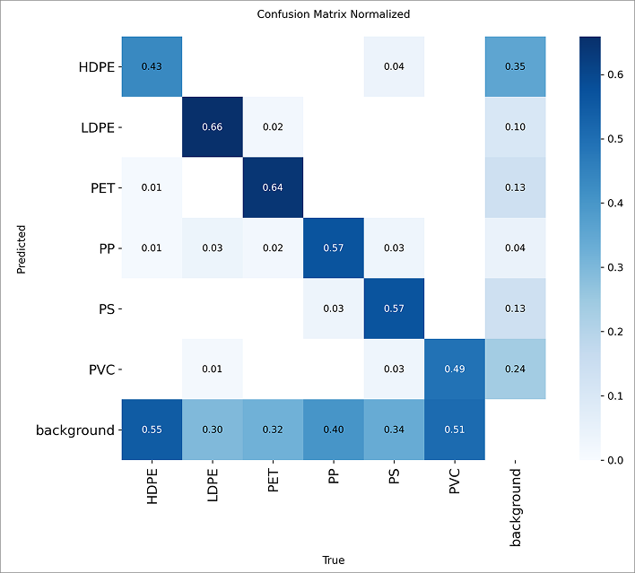

RecycleNet · Research Project
RecycleNet · Research Project
RecycleNet
Deep Learning-Assisted Dynamic Plastic Identification Technique For Automated Waste Segregation
RecycleNet is an edge-optimized computer vision architecture engineered to automate industrial plastic resin identification in real time across the 6 standard Resin Identification Codes: PET, HDPE, PVC, LDPE, PP, and PS. Trained on a completely custom physical dataset of 2,420 high-resolution images and 8,884 bounding boxes, the system achieves a blistering 2.0 ms inference latency with YOLO26n and 62.0% mAP@50 with RF-DETR transformers. It features a multi-threaded Python Flask & OpenCV desktop inference pipeline alongside a completely offline native Kotlin/Jetpack Compose Android mobile app running PyTorch Lite. Published in IEEE ICCECE 2026.

How RecycleNet achieves real-time industrial sorting on commodity edge hardware and zero-cloud smartphones.
Curated 2,420 unique multi-angle physical images across 8,884 bounding boxes annotated in Roboflow, strictly mapping to the 6 industrial polymer codes: PET, HDPE, PVC, LDPE, PP, and PS.
Benchmarked YOLO26n, YOLOv8s, YOLO26m, and RF-DETR on dual Nvidia T4 GPUs. YOLO26n achieved a blistering 2.0 ms processing turnaround per tensor grid with 58.6% mAP@50.
Multi-threaded Python Flask microserver paired with an asynchronous OpenCV VideoCapture loop supporting Apple Silicon Metal Performance Shaders (MPS) and Nvidia CUDA.
Smartphone edge client built in native Kotlin with Jetpack Compose (Material 3), Android CameraX live frame analyzer, and compiled PyTorch Lite (.ptl) models for zero-cloud operation.
Plastic waste accumulation forms one of the most critical contemporary ecological crises. Sorting municipal waste streams at material recovery facilities remains the core bottleneck. Legacy sorting methods force an unviable trade-off:
- Manual Labor Separation: Highly subjective, prone to severe human error, and exposes workers to chemical leachates and biohazardous contaminants on conveyor lines.
- Near-Infrared (NIR) Spectrometry: Offers high specificity but requires capital expenditure in excess of tens of thousands of dollars per sensor, restricting automated sorting to only massive centralized plants.
- The RecycleNet Alternative: Replaces specialized spectrometers with consumer-grade optical cameras and edge neural networks, delivering real-time bounding box regression and polymer classification directly at the sorting line.
To evaluate deployment trade-offs between processing speed and classification accuracy, four state-of-the-art vision architectures were benchmarked on parallel Nvidia T4 Tensor Core GPUs:
- YOLO26n (Ultra-Lightweight Champion): 2.38M parameters, achieving a lightning-fast 2.0 ms inference turnaround and 58.6% mAP@50 — ideal for rapid conveyor belts and mobile devices.
- RF-DETR (Peak Accuracy Transformer): Achieves the highest Precision (0.740), Recall (0.591), and 62.0% mAP@50 at an inference loop of 14.8 ms.
- Progress Over Baseline: Compared to prior published YOLOv8 models, Precision climbed from 57.4% to 72.3%, Recall rose from 45.5% to 54.2%, and mAP@50 increased from 46.5% to 58.6%.
- Class-Wise Discrimination: Normalized confusion matrices revealed high discriminability for PET (81%) and LDPE (75%), with YOLO26n exhibiting lower background false-positives than larger models.
To bridge research models into operational physical sorting environments, two unified deployment pathways were built:
- Desktop OpenCV / Flask Pipeline: Captures video frames via
cv2.VideoCapture, executes forward-propagation tensor inference utilizing Apple Silicon MPS or Nvidia CUDA, and serves a live multipart JPEG stream to an HTML5 dashboard. - Native Kotlin Android Mobile App: Built with Jetpack Compose following Material 3 guidelines. Integrates Android CameraX for live continuous frame analysis and runs quantized PyTorch Lite (
.ptl) models entirely on-device without any cloud connectivity. - Dual Operational Modes: The mobile app supports both Live Scan Mode (real-time camera feed with confidence thresholding and NMS bounding boxes) and Gallery Mode (single-run static image analysis).
Published in the Proceedings of the 2026 IEEE International Conference on Computing, Electronics & Communications Engineering (ICCECE). Future iterations will integrate the visual detection output directly with Arduino and Raspberry Pi microcontrollers to actuate high-pressure pneumatic air nozzles and mechanical deflector arms, creating a fully automated, low-cost physical sorting conveyor machine.
Click any screen or chart below to inspect model telemetry, software architecture, and interface designs in fullscreen lightbox view.


